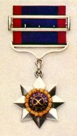
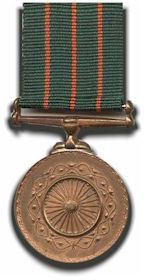
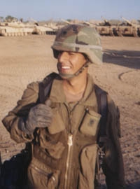

Sainis in Uniform: The Ancient Saga Continues
"Men of this tribe not seldom take service, and especially in cavalry."
1289f.jpg?height=220&width=320) H'ble Defence Minister of Canada , Lt. Colonel Harjit Sajjan (Saini) receiving guard of honor from Indian Army. माननीय श्री हरजीत सिंह सज्जन (सैनी) , रक्षा मंत्री , कनाडा Colonel Sajjan belongs to Bombeli village of district of Hoshiarpur, Punjab and he is a confirmed Yaduvanshi Saini Rajput Sikh. Sajjan clan of Punjabi Sainis corresponds with "Sajatiya" clan of Jadon Rajputs of Mewar The awards list given below is not exhaustive. Not all Sainis use their clan or sub clan names and go by the last names such as 'Chaudhary', 'Singh', 'Kumar', etc. Since these names are shared by many other groups (some of which overlap Sainis) such as Sikhs, Jats, Dogras and Rajputs etc , it is not possible to isolate Sainis among them just by their last names. The following list pertains only to those decorated armymen and policemen who are confirmed to be Sainis. The actual list of decorated Saini army and police personnel might be much longer. More quality research is needed in this reference.  Lieut-General (Retd.) SK Saini, PVSM, Vice Chief of the Army Staff (Vice Chief of Indian Army) लेफ्टिनेंट जनरल श्री सतिंदर कुमार सैनी, उप सेनापति, भारतीय सशस्त्र सेना  वाईस एडमिरल रवनीत सिंह सैनी , उप सेनापति, भारतीय नौसेना Further this list contains only those armymen and policemen who have won major wartime and peacetime awards. The list of Sainis in Indian Army is very large and needs no inclusion here. Army and police have traditionally been major sources of employment for Sainis. British had classified Sainis as a 'martial race'. Purser recorded even in 1892 land settlement report that Sainis joined the military service quite frequently, especially as cavalrymen.
Lieut-General (retd.) Balbir Singh Pama, former Chief of Staff of the Northern Command "Pama" , along with "Salaria", is a major Saini clan in Gurdaspur It is no surprise, given the overwhelming preference for Army and Police jobs in the Saini youth , the first Commisioner of Police for as many as three UTs (two of which are full fledged states now) was a Saini IPS officer hailing from village Rallana near Dasuya in district Hoshiarpur. His name was IGP Sadhu Ram Chaudhari who in 1948 was independent India's first joint police chief for Himachal Pradesh, Delhi and Ajmer. IGP Chaudhari had also received the decoration of Officer of Order of British Empire (OBE) because of his outstanding police career.
Sh.Sumedh Singh Saini, DGP (Retd.), Punjab Another fact that needs to be born in mind is comparison of Sainis with Dogras , Pushtuns, Jats and Rajputs is not an apples to apples comparison. Sainis are merely a sub tribe of Yaduvanshi Rajputs who took to agriculture in Punjab and spun-off with a distinct identity local predominantly to Punjab and bordering region. Their numbers are relatively very small compared with these groups. For example according to the 1881 census, the entire Saini population in the whole of undivided Punjab- also all of pre-partition India for that matter- was only 132,000 while the population of just a single Jat clan of Sidhus was 208,000. The Saini population was reduced to 106,000 in 1901 census after mistakes of 1881 census were corrected. The best way to gauge proportionate Saini contribution to feats of gallantry in armed forces would be by comparing them individually with other Rajput sub tribes such as Bhati, Chauhan, Sisodia, etc rather than Rajputs, Jats , or Dogras as integrated groups which are extremely large and heterogeneous when compared to Sainis.
Heroes' Gallery
 The Commander of the US Army, Pacific Command Lieut-Gen James Campbell saluting US Army Sgt. Udai Singh's father in Chandigarh. Grandson of equally illustrious soldier, Wing Cdr Kartar Singh, Udai was a Saini of Taunque (Taank) sub clan and was martyred in Iraq in 2003. He received a Purple Heart and Bronze Star posthumously for his gallantry in battlefield. Picture- Courtesy, The Tribune. Decorated Saini Armymen
 Maj Gen. Deepak Saini with H'nble Sh Pema Khandu, Chief Minister of Arunachal Pradesh
 Late Air Commodore Mohinder Kumar Saini, AVSM
As of now we have not been able find information about Brigadier SS Saini's official gallantry citation but we have a more direct corroboration of his gallantry in ithe Battle of Dangapara of 1971 war in the words of Major General Shamsher Singh (MVC) as follows: "We carried on fighting and they carried on attacking us. We launched attacks on numerous positions. Each of these positions were held very strongly by the Pakistanis. We moved on company by company -- something many armies would not think of -- fighting a superior enemy with a mere battalion, or a mere company, but we carried on till the last position Dangapara had been captured by one of my gallant officers Major S S Saini (later brigadier)." (Source: 'We fought the battle as if it was the last thing we'd ever do', December 14, 2016, Rediff.com / Major General Shamsher Singh's interview by Arhana Masih) .jpg) Brigadier SS Saini (then Major) along with with Major General Shamsher Singh (MVC) . Brigadier Saini is second from the left in a turban. Brigadier Saini is remembered for his striking leadership , while gallantly capturing Dangapara in the monumental Battle of Hilli n 1971 Bangladesh Liberation War.
 Major General Vikas Saini, VSM, SM
Colonel Harjit Sajjan's meritorious award citation partly reads as follows:
 Group Captain Vikassheel Singh Saini
 Legendary Wing Commander Krishan Kant Saini, Vir Chakra. Not only is his battle field gallantry attested through his Vir Chakra , he was also a world renowned helicopter pilot. In 1969 , he created world record in helicopter avionics by landing helicopter at the height of 6858 m (22,500 feet) in the Karkoram ranges.
 Major Ravindra Singh (Saini) , Vir Chakra He took part in Indo-China and Indo-Pak wars. He also went to Congo for UN peace-keeping operations.
US Army Sgt. Uday Singh Taunque
Saini participation in World War II was much higher than World War I. Saini Online has not been able to access World War II records. Even the information about World War I is partial , availability of which is the result of serendipity than serious effort to locate these records. If you happen to be a Saini whose grandfather or great grandfather fought in World Wars or any later war and won a gallantry award, Saini Online is interested in hearing from you with the information of citation. We will post their name here after verifying the references of published records that you will provide us.
Decorated Saini policemen Gallantry medal is the most prestigious award for any police officer in the country. It is awarded for displaying conspicuous gallantry, courage and devotion to duty of very high order. The police officer keeps the duty before self in completing the task. This award is rare in itself as the action should match the risk involved on the occasion. The senior controlling officer assessing the task performed by the subordinate recommends to the head of the police department for award of gallantry medal.
Former DGP Sumedh Singh Saini His brother , Dinesh Singh, is an IAS officer in UP. Sumedh Singh was decorated for gallantry in 1987.
 IG Kuldeep Saini | Wall of Fame Param Vir Chakra , Indian Army's highest gallantry award won by Subedar Joginder Singh and Captain Gurbachan Singh Salaria, both Saini Rajputs of composite Tomar-Yaduvanshi ancestry.
Subedar Joginder Singh originally hailed from village Munaka of district Hoshiarpur and was a proud Saini of Shahnan clan. His family had migrated to village Mahla Kalan of district Moga just prior to his birth.  Captain Gurbachan Singh Salaria hailed from Saini owned village Janglay in Gurdaspur.
Cross of St. George, Imperial Russia's highest gallantry award. It was equivalent of British Victoria Cross and modern Param Vir Chakra. Gurmukh Singh Saini won this award in 1916 during World War 1 for his bravery in battlefield.  A Sikh Jemadar from Bengal Lancers. Gurmukh Singh Saini held this rank at the time of his military decoration with Cross of St. George and Indian Order of Merit.
"... I will give you here the names of three of those men who have earned fame by their heroism. Jemadar Gurmukh Singh, a Saini Sikh of Gadram Badi in Rupar, won the 1st Class Order of Merit and the 2nd Class Cross of the Russian Order of St. George for his splendid courage on the night of the 1st March 1916 when he advanced under the greatest difficulties, continually crawling forward and digging himself in..."
War speeches (1918), pp 129, Author: O'Dwyer, Michael Francis, (Sir) 1864-, Subject: World War, 1914-1918; World War, 1914-1918 -- Punjab Publisher: Lahore Printed by the Superintendent Government Printing  Order of Military Merit (OMM), Canadian Army Select Military Honors of Col. Harjit Singh Sajjan (Saini)
Officer of Order of British Empire IGP Sh. Sadhu Ram Chaudhari, Independent India's first Commissioner of Police for the states of HP, Delhi and Ajmer , was decorated with the title of Officer of the Order of British Empire (OBE) in 1945.
IGP Sh. Sadhu Ram Chaudhari belonged to village Rallana in Dasuya tehsil of Hoshiarpur and was a proud Saini of Banwait (Banawat) clan.

Indian Order of Merit Subedar-Major Jagindar Singh Saini and Jemadar Gurmukh Singh Saini both gained this gallantry award for heroics in World War I. Later Subedar Pritam Singh Darar of village Bagwain in Hoshiarpur won this award posthumously for his exceptional gallantry in Operations against Tongzang in World War 2. IOM's post-1912 equivalence is the modern Maha Vir Chakra. Prior to 1912 it was equivalent to Victoria Cross.
The winner of OBI also earned the title of ''Bahadur" or "Hero". This was one of the highest military decorations of British India. Subedar-Major Jagindar Singh, a Saini from village Salabat Kheri in Ropar won this military honour for his gallantry and leadership in the Battle of Loos during World War I " ..for his conspicuous gallantry in action on the 17th November 1914 when with a party of Sappers under the command of a British Officer he was always to the fore and led his men with great determination into the enemy's trenches. Subedar-Major Jagindar Singh, Saini Sikh of Kheri Salabatpur in Rupar, gained the 2nd Class Order of Merit at the battle of Loos in Belgium for striking leadership and conspicuous bravery in action after most of his company and all but one British Officer in his regiment had been killed or wounded. This officer was also awarded the 2nd Class of the Order of British India for distinguished conduct in the field." War speeches (1918), pp 129, Author: O'Dwyer, Michael Francis, (Sir) 1864-, Subject: World War, 1914-1918; World War, 1914-1918 -- Punjab Publisher: Lahore Printed by the Superintendent Government Printing
Wing Commander Kartar Singh Taunque Wing Commander Kartar Singh Taunque, then a Hawai Sepoy, became the first ever soldier of Indian Airforce to receive a gallantry award citatation. He was mentioned in despaches for bombing Waziristan during World War II..
Subedar Pritam Singh Darar (IOM) %20-IOM%20award941f.jpg?height=100&width=194)
Shaheed Major Harminder Pal Singh Saini, Shaurya Chakra "There can be no better example of the spirit of Service Before Self - the motto of the Indian Army - where Major Singh, despite having suffered grievous injuries, continued to lead his troops from the front and eliminated two mercenaries before laying down his life. Major Harminder Pal Singh was honoured with the Shaurya Chakra, for his exceptional gallantry and devotion to duty, posthumously."
 Shaurya Chakra, Indian Army's peace time gallantry award equivalent to Vir Chakra
 US Army Sgt. Uday Singh Taunque, Kia, Iraq Sargeant Uday Singh Taunque, a Saini, became the first American soldier of Indian descent to die fighting in Iraq. He won a Purple Heart and Bronze Star. Uday was the grandson of Wing Commander Kartar Singh Taunque, who was the first soldier of Indian Airforce to gain a gallantry award.
b4e4.jpg?height=151&width=181) US Army Sgt. Paul Singh Pabla from Fort Wayne, Indiana
In 2006 , Sgt. Paul Singh Pabla of Fort Wayne , Indiana , another Saini soldier serving in US army laid down his life in Iraq and gained a posthumous Purple Heart.
 Bronze Star (US Army)
Purple Heart (US Army)  Shaheed Sanjeev Kumar Singh Saini He was in Sikh regiment and was from village Kaulpur (Kurukshetra district) and was martyred in Kargil War in 1999 at the age of 19. His gallantry citation is unknown but according to Hindi daily Jagran's report, dated Mon, 25 Jul 2016, he killed five Pakistani soldiers before going down. |


3dbda.jpg?height=234&width=320)


-PVC688d.jpg?height=200&width=132)

da32.jpg?height=333&width=247)

9eff.jpg?height=134&width=198)
%20-%20IOM74dd.jpg?height=256&width=198)
.jpg)